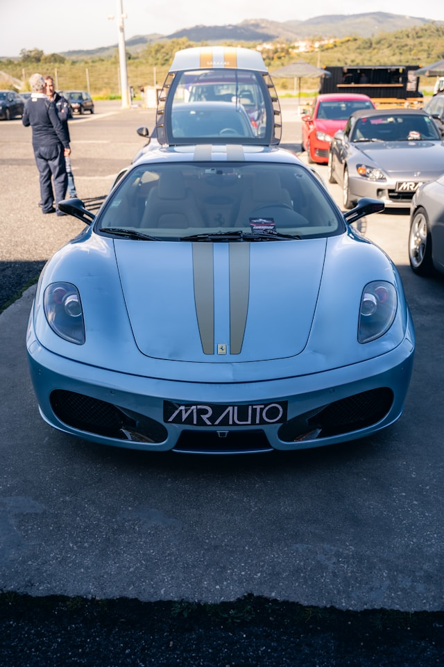
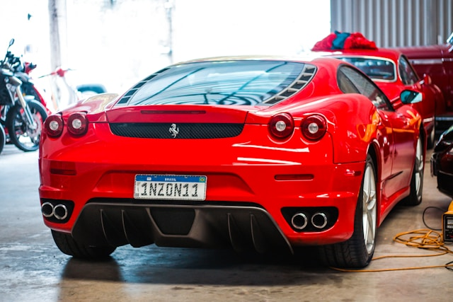

Ferrari F430 Overview
The reason why I chose the Ferrari F430 specifically because it is now starting to become more appreciated for being the last Ferrari that came with a manual transmission, which is something that many car enthusiasts are starting to appreciate more and more. This is in contrast to the 458 model that succeeded it having no manual option while having a major power increase compared to its predecessor the 360, which explains why values are starting to increase again.
 